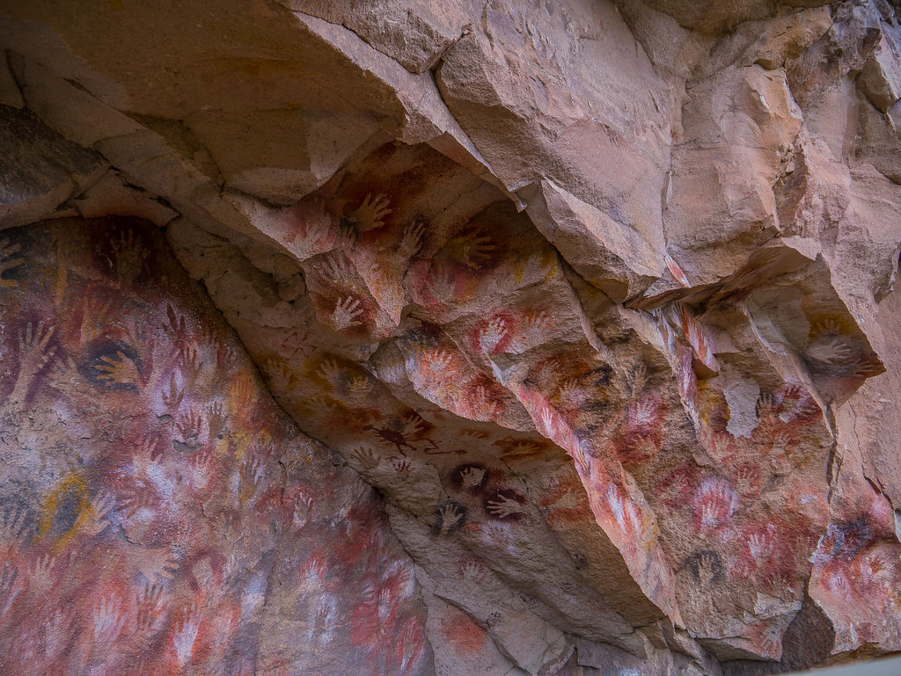
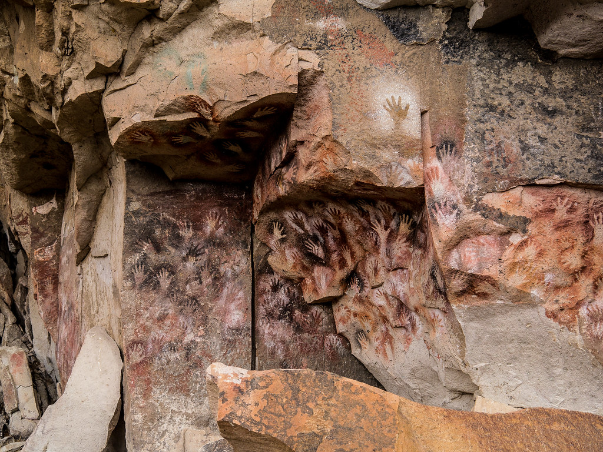
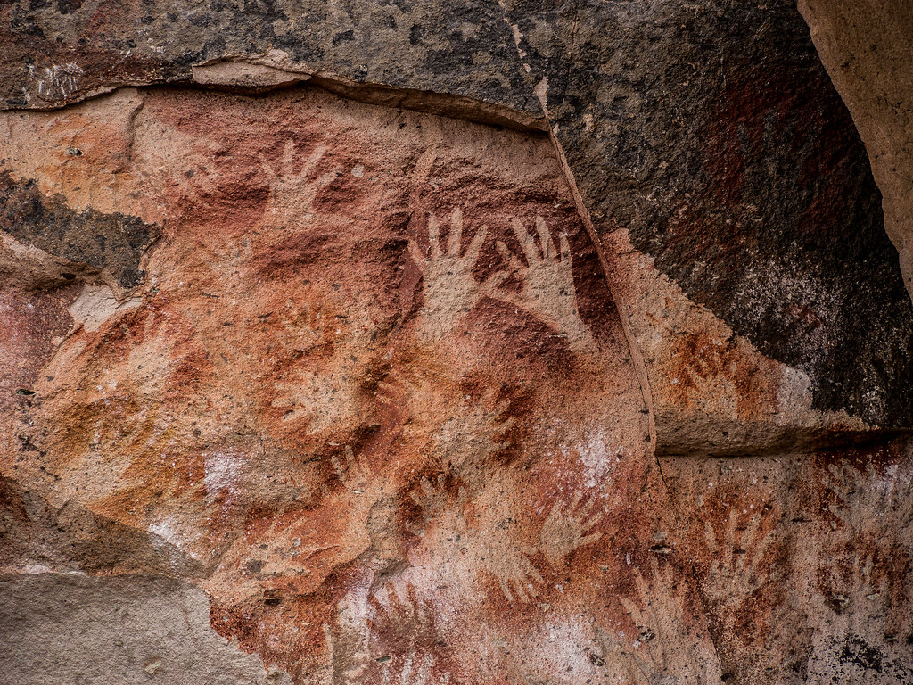
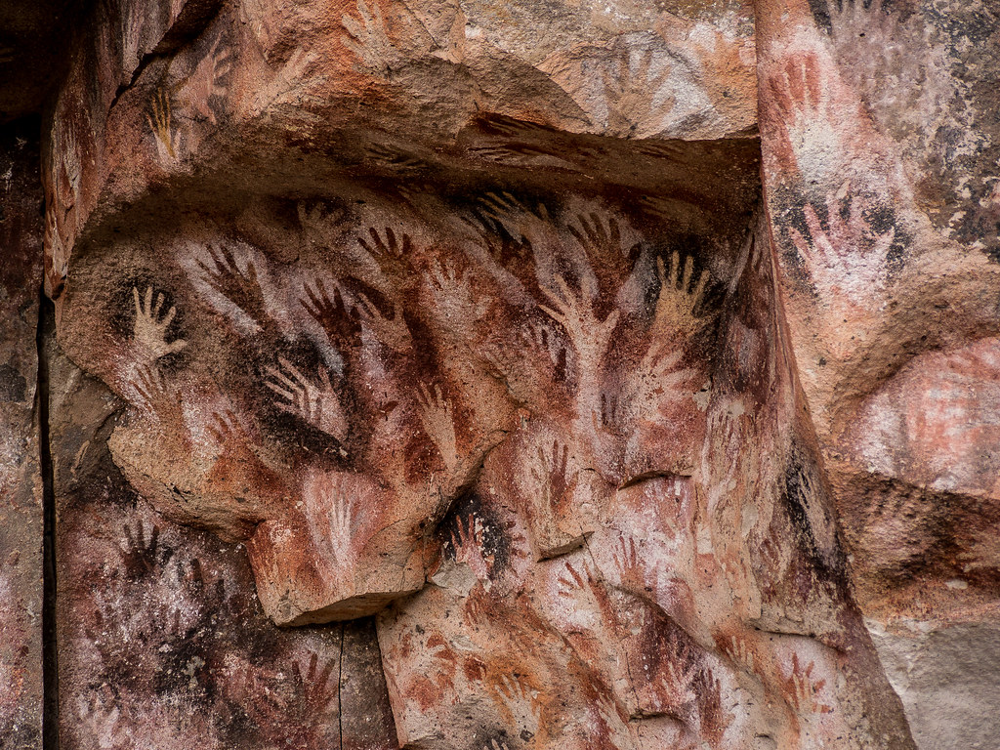
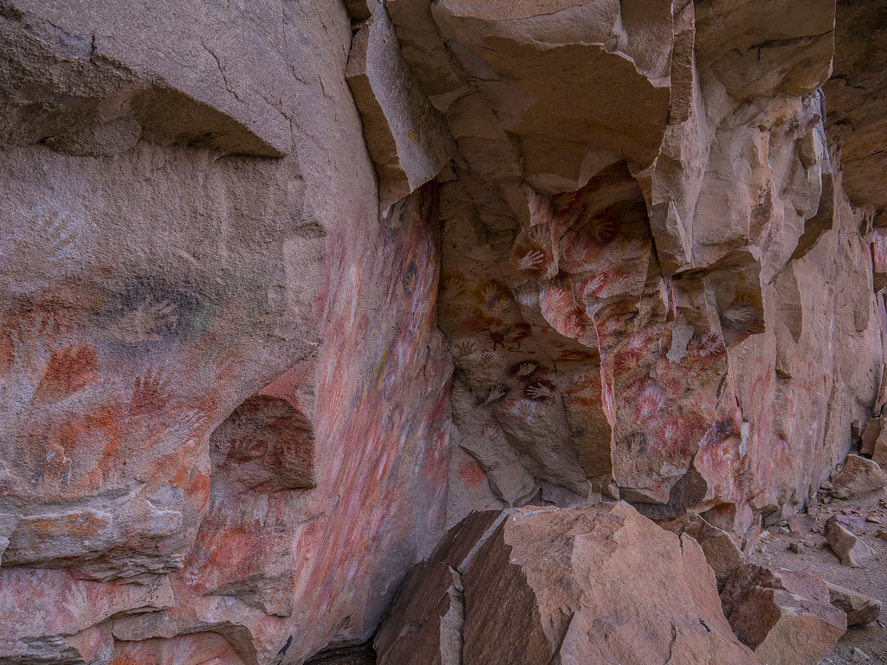
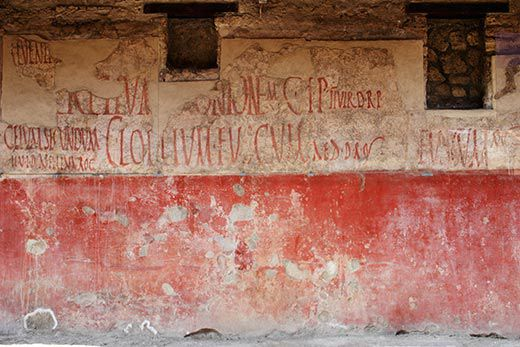

Tema 3: Historia del Arte Urbano y el Grafiti.

¿Cuáles fueron sus inicios?
Desde un punto de vista histórico, entre los romanos estaba acentuada la costumbre de la escritura ocasional sobre muros y columnas, esgrafiada y pintada, y se han encontrado múltiples inscripciones en latín vulgar: consignas políticas, insultos, declaraciones de amor, entre otros; junto a un amplio repertorio de caricaturas y dibujos en lugares menos afectados por la erosión, como en cuevas/santuarios, en muros enterrados, en las catacumbas de Roma o en las ruinas de Pompeya y Herculano, donde quedaron protegidos por la ceniza volcánica.
El término de Graffiti es una palabra en plural que proviene del término italiano “Graffito”, derivado de la palabra Graffio que puede ser traducida a “rasguño”.Uno de los primeros ejemplos históricos de Graffiti se encuentra en “La Cueva de las Manos” en Santa Cruz, Argentina, con una fecha histórica aproximada de 13,000 a 9,000 Años atrás.
En la antigua ciudad de Ephesus en Grecia, también se puede evidenciar uno de los primeros ejemplos de arte urbano: un Graffiti que funciona como un anuncio para una casa de prostitución, compuesto por un dibujo de una mano, un pie, un corazón y números.

Descargado de Link

Descargado de Link

Descargado de Link

Descargado de Link

Descargado de Link

Descargado de Link
Grafiti y Arte Urbano en la modernidad
A lo largo de la historia, siempre han aparecido elementos similares al grafiti en las ciudades, sin embargo, su importancia como movimiento artístico empezó a tomar peso en la modernidad.
Se puede definir que el principio del arte urbano como movimiento de la época contemporánea se define por las raíces establecidas a través de las décadas de 1920 y 1930 iniciados con piezas de graffiti en las paredes y vagones de tren, usualmente hechos por bandas callejeras. Pero fue en las décadas de 1960, 1970 y 1980, donde la energía que empezó el movimiento tomo forma y es aun visible a principios del siglo 21, manteniendo un punto de vista político un tanto subversivo.
Un punto clave que definió los orígenes del arte urbano como movimiento fue que su énfasis está en el proceso creativo moldeado por la intención de los artistas, formando una antítesis del contexto social en el cual reside.
Esto implica, en esencia, que el movimiento cambia y se transforma con el paso del tiempo, y con cada nueva generación de artistas, el movimiento se va adaptando a las nuevas realidades sociales que van surgiendo.
Eventualmente, el movimiento empezó lentamente a establecerse y a expandirse por distintos medios de comunicación, lo que llevo a que empezara a verse como algo común en las ciudades. Dejo de ser visto solo como una actividad ilegal y más como una expresión social de lo que significa vivir en la ciudad. Se empezó a ver como un proceso de creación que dio paso a numerosas formas de expresión artísticas que hoy en día se consideran piezas de arte, y ha llegado al punto de que hoy día es común encontrar piezas que son consideradas elementos representativos de un lugar.
Videos de apoyo
Te invitamos a ver los siguientes videos con los cuales puedes aprender un poco màs del tema.